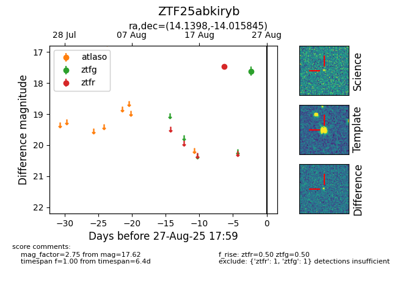

Target ZTF25abkiryb at 2025-08-27 17:59, see:
FINK: fink-portal.org/ZTF25abkiryb
Lasair: lasair-ztf.lsst.ac.uk/objects/ZTF25abkiryb
ALeRCE: alerce.online/object/ZTF25abkiryb
alt names
ZTF25abkiryb (ztf,fink)
coordinates:
equatorial (ra, dec) = (14.1398,-14.01584)
galactic (l, b) = (128.3930,-76.83326)
photometry
last ztfg=17.62, ztfr=17.47
1 ztfg, 1 ztfr detections
